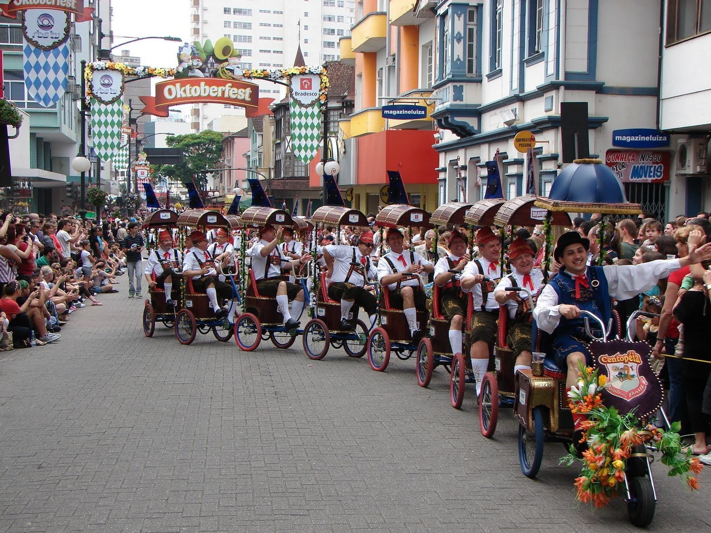
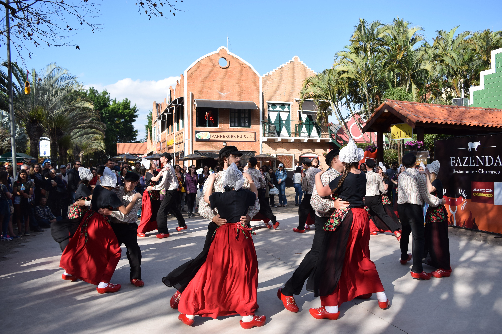

브라질은 다인종 국가지만 백인의 비율이 꽤나 높은데
실제로 브라질인의 43%정도가 백인이다(물론 실제로는 이보다 낮을 것이다)
백인 인구는 절반도 안되지만 브라질 자체의 인구가 워낙 많아서
세계에서 백인이 많은 국가 3위에 해당한다(2위는 러시아, 1위는 미국)


브라질은 다인종 국가지만 백인의 비율이 꽤나 높은데
실제로 브라질인의 43%정도가 백인이다(물론 실제로는 이보다 낮을 것이다)
백인 인구는 절반도 안되지만 브라질 자체의 인구가 워낙 많아서
세계에서 백인이 많은 국가 3위에 해당한다(2위는 러시아, 1위는 미국)
독일에서도 남미 많이 갔음 ㅇㅇ
오ㅐ 2차대전사 막바지 가면 낙찌먹던 애들 많이 아르헨이나 브라질로 튐
당시만 해도 인기있던 이민루트였음
백인이긴한데... 내가 인식하고 있는 백인이랑 좀 다른 인종 같은 느낌
ㄹㅇ 일반적인 백인보다 약간 게르만쪽 같음
축구선수로 보면 알리송, 카카, 아르투르 멜투 이런 사람들이군..
그리고 쟤네가 평균적으로 훨씬 더 잘 삼
브라질 도로사정도 안좋고 치안도 낮아서 그런 진짜 잘사는 애들은 아에 헬기나 개인 비행기로 통근하는데
그덕분에 브라질 항공분야가 엄청 수준 높음
우리도 브라질에서수입
근데 혼혈은 어떻게 구별하냐
백인흑인 혼혈은 백인이냐 흑인이냐
걔네들도 굳이 구별 안하는거 같아요
아르헨티나 보면 90퍼 넘는 인구가 백인으로 분류되던데 겉보기로 백인이면 그냥 백인으로 치는 느낌
아르헨티나나 브라질 백인이나 실제로는 흑인 원주민 피 엄청 섞였을거임
그럼 유럽은 백인 비율이 4위 밑이라고?
유럽은 나라가 아니야..
그리고 비율 말고 대가리 수
히틀러는 자살하고 레벤스라움은 실패했어요..
브라질에 관심가져줘서 고맙다ㅠ 나 한국 와이프 브라질 다문화가정이다. 와이프 친구 이웃 백인이 다수다 95퍼정도ㅠ 가족은 다 백인인듯 나만 똥양인... 동네따라다르고 지역따라다르고 사회관계따라 ㄹㅇ 인종분포가 다름
어떤 점이 제일 좋습니까
다문화가정 혜택 다이스키
헤시피 놀러갔는데 그쪽은 흑인이 진짜 많더라ㅋㅋ 지역마다 확실히 다른듯 분포도가
맞아요 북쪽일수록 흑인 물라토비율이 높다고 들었음
브라질에 일본계가 그리 많다는데 사실임?
그 일본계 다수가 일본으로 역이민 갔다던데
상대적으로 가난한 북동부는 흑인이 주류고 잘사는 남동부는 백인, 남부로 갈 수록 순수 백인비율 높아짐
일본인들은 남동부 대도시(Curitiba 등)에 많고 특히 상파울루 Liberdade라는 구에 밀집 거주 중임
가면 토리이 본딴 가로등도 있고 어딜가든 일식집임ㅋㅋ
넹 상파울루 쿠리치바 가면 진짜 많아요! 한국인도 많음
섞여 사는 구조는 아닌가보네
섞여살긴하죠! 근데 노예식민지로 시작한 나라이고 빈부격차가 크다는걸 생각해보면 많이섞인것 같아요
진짜로 바닷가가면 젖탱이 크고 내놓고 다님?
일단 저는 못봄ㅠ
ㄴㄴ젖보단 빵디들이 개 젖됨 진짜로
학생부터 할머니들까지 죄다 비티니임
빨간머리 브라질 여자 만난적 있는데 가슴이고 엉덩이고 과해서 너무 좋더라
브라질은 다인종국 안에서 인종차별이 제일 없다던데
보통 쿠리치바 같은 내륙부 안정적인 도시권에 모여살고, 소득수준도 높은 편.
그리고 브라질에서 의외로 제일 많은 동아시아계는 일본계임 ㅋㅋ
일본 애들이 20세기 초에 브라질로 이민 많이 갔음.
ㅅㅂ백인브라질리언어디감?
내가 좋아하는 세가지
아르헨티나 우루과이는 90퍼가 코카소이드임
포르투갈이 작정하고 눌러살려고 이주한 영향도 클듯
왕족들도 브라질에서 살았었으니
잉 미국이 1위인게 웃기네
근데 백인이라기보다는 홍인에 가깝지 않나.. 진짜 피부가 하얀 쪽은 핀란드 노르웨이 쪽이더만
"백인" 비율이라 숫자 자체가 많은건 사실이지만 미국에서는 백인과 따로 분류되는 중동계, 라티노/히스패닉등도 브라질에서는 그냥 백인으로 분류되서 백인의 비율이 높은거임 저기서 백인에 속한다고 답한 많은 수의 브라질인들이 미국이나 유럽 현지인들에게는 백인으로 보이지 않을거임
애초에 백인자체가 유전적인 개념이 아니라 사회적인 개념인지라 괜히 영미권에서는 인종(Race)이란 단어는 거의 안쓰이고 민족성(Ethnicity)으로 대체됨
일례로 아드리아나 리마는 유전적으로는 유럽계가 60%정도고 나머지 40%가 중동, 아프리카, 일본계인데도 대다수의 사람들이 봤을때는 그냥 백인으로 볼꺼고 본인은 아프리카계 브라질인이라고 함. 생부는 육아에 거의 관여안하고 아프로 브라질인 외가쪽에서만 자라서
브라질 백인?
주니뉴 카카 엘라누 오스카 쿠티뉴 기마랑이스 알리송
뭔가 독일느낌이네